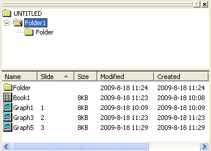
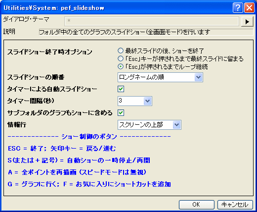

pef_slideshow
メニュー情報
グラフのスライドショー
概要
フォルダ内のすべてのグラフのスライドショー(全画面表示)
追加の情報
Origin Version: 8.1 SR0
コマンドラインでの使用法
- pef_slideshow end:=1 timer:=1 period:=2;
変数
表示
名 |
変数
名 |
I/O
と
データ型 |
デフォルト
値 |
説明 |
| スライドショー終了時オプション |
end |
入力
int
|
0
|
スライドショー全体を実行した後に実行する操作を指定します。
オプションリスト:
- 0:最終スライドの後ショーを終了
- プレゼンテーション全体が終了した後、スライドショーを終了します。
- 1:Escキーが押されるまで最終スライドに留まる'
- Escキーが押されるまでプレゼンテーションの最後のグラフを表示します。
- 2:Escキーが押されるまでループ継続
- Escキーが押されるまで、繰り返しグラフを表示します。
|
| スライドショーの順番 |
order |
入力
int
|
0
|
スライドショーでのグラフの順番を指定します。
オプションリスト:
- 0:スライドインデックスによる
- スライドインデックスの順序でグラフを表示します。(プロジェクトエクスプローラのスライド列、これはプロジェクトエクスプローラでグラフをドラッグ&ドロップして変更できます。)
- 1:現在のフォルダ順序を使う
- プロジェクトエクスプローラに表示されている順序でグラフを表示します。
- 2:ロングネームの順
- ロングネームのアルファベット順(文字コード順)でグラフを表示します。
- 3:ショートネームの順
- ショートネームのアルファベット順(文字コード順)でグラフを表示します。
- 4:変更日時の昇順
- 変更日時の昇順でグラフを表示します。
- 5:変更日時の降順
- 変更日時の降順でグラフを表示します。
- 6:作成日時の昇順
- 作成日時の昇順でグラフを表示します。
- 7:作成日時の降順
- 作成日時の降順でグラフを表示します。
|
| タイマーによる自動スライドショー |
timer |
入力
int
|
0
|
タイマーを使って次のスライドを自動的に表示するかどうかを指定します。 |
| タイマー間隔(秒) |
period |
入力
double
|
2
|
タイマーによる自動スライドショーが選択されているときのみ利用できます。次のグラフに切り替えるまでの画面に表示するグラフの時間を秒単位で指定します。 |
| サブフォルダのグラフもショーに含める |
recursive |
入力
int
|
1
|
サブフォルダのグラフもスライドショーにするかどうかを指定します。 |
| 情報行 |
info |
入力
int
|
1
|
グラフの名前とパスを含む、現在のグラフに関する情報を表示する位置を指定します。
オプションリスト:
- 情報を表示しません。
- スクリーンの上部に情報を表示します。
- スクリーンの下部に情報を表示します。
|
説明
このXファンクションは、指定したフォルダ内のグラフのスライドショーを開始するのに使用します。プレゼンテーションの表示方法を制御することができます。グラフの順序、スライドショーを自動的に実行するするかどうか、その方法を設定することができます。
サンプル
- ルートフォルダに3つのグラフ、サブフォルダに2つのグラフを含むプロジェクトを作成します。
- 
- プロジェクトエクスプローラでルートフォルダを右クリックし、グラフのスライドショーを選択してダイアログを開きます ダイアログのオプションを次のようにセットします。
- 
- OKをクリックすると、スライドショーにすべてのグラフが表示されます。グラフはロングネームのアルファベット順になっています。グラフの切り替えは、3秒ごとに自動的に行われます。
関連のXファンクション
pef_pptslide